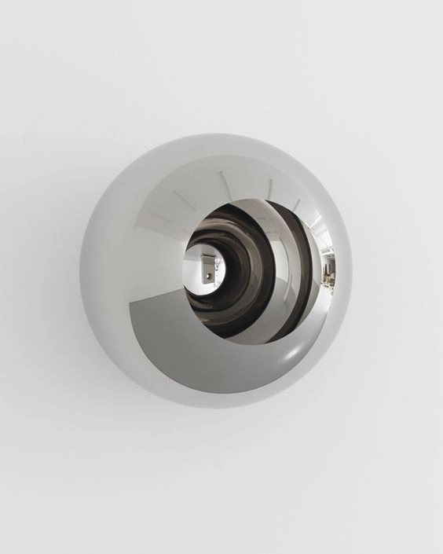
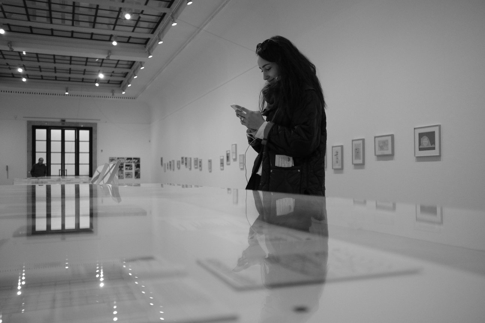
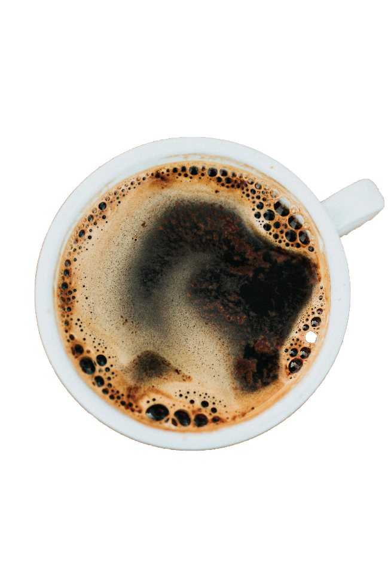

<title>Lida Voprsalova Design</title>
<meta name="description" content="Lida Voprsalova, digital designer: UX/UI, graphic design and logotypes.">
<link rel="preconnect" href="https://fonts.googleapis.com">
<link rel="preconnect" href="https://fonts.gstatic.com" crossorigin>
<link href="https://fonts.googleapis.com/css2?family=Saira+Extra+Condensed:wght@600;800&display=swap" rel="stylesheet">
<style>
/* Layout: the original XD portfolio rebuilt as one page with three views (home, project, cv). Single light look, as designed. */
:root {
  color-scheme: light;
  --bg: #f7f3e9; --bg-project: #f7f8fc; --ink: #202025; --muted: #707070; --line: #707070; --accent: #1c0dc9; --lime: #e9fdac;
  --frame: #161615; --soft-hi: #ffffff; --soft-lo: rgba(32,32,37,.10); --stroke: #d8d2c4;
  --sans: "Helvetica Neue", Helvetica, Arial, system-ui, sans-serif;
  --cond: "Saira Extra Condensed", "Eurostile Condensed", "Arial Narrow", sans-serif;
}
* { box-sizing: border-box; }
html { scroll-behavior: smooth; }
@media (prefers-reduced-motion: reduce) { html { scroll-behavior: auto; } * { animation: none !important; transition: none !important; } }
body { background: var(--bg); color: var(--ink); font: 400 16px/1.5 var(--sans); -webkit-font-smoothing: antialiased; overflow-x: hidden; }
body.project { background: var(--bg-project); }
a { color: inherit; }
a:focus-visible, button:focus-visible { outline: 2px solid var(--accent); outline-offset: 3px; }
button { font: inherit; color: inherit; background: none; border: 0; cursor: pointer; padding: 0; }
img, video { max-width: 100%; display: block; }
.view[hidden] { display: none !important; }
.gutter { padding-inline: clamp(16px, 2.6vw, 50px); }
.pill { display: inline-flex; align-items: center; padding: 9px 16px; border-radius: 999px; font-size: 14px; background: inherit; box-shadow: -4px -4px 9px var(--soft-hi), 4px 4px 11px var(--soft-lo); border: 1px solid rgba(255,255,255,.6); }
.upper { text-transform: uppercase; font-size: 13px; line-height: 1.55; letter-spacing: .01em; }
.accent { color: var(--accent); }

/* home: hero rings */
.hero { position: relative; min-height: clamp(560px, 62vw, 1000px); display: grid; place-items: center; overflow: hidden; }
.rings { position: absolute; inset: 0; pointer-events: none; }
.rings i { position: absolute; left: 50%; top: 50%; border: 1px solid #e6e0d2; border-radius: 50%; transform: translate(-50%, -50%); }
.rings i:nth-child(1) { width: min(150vw, 1500px); aspect-ratio: 1; }
.rings i:nth-child(2) { width: min(74vw, 1110px); aspect-ratio: 1; }
.rings i:nth-child(3) { width: min(28vw, 420px); aspect-ratio: 1; min-width: 260px; }
.hero-inner { position: relative; display: grid; grid-template-columns: auto auto; align-items: center; gap: 28px; }
.hero-text { display: grid; gap: 22px; justify-items: end; text-align: right; max-width: 300px; }
.hero-pill { background: var(--accent); color: #fff; border-radius: 999px; padding: 6px 16px; font-size: 13px; text-transform: uppercase; white-space: nowrap; }
.hero-text p { color: var(--accent); }
.sphere { width: clamp(180px, 17vw, 330px); aspect-ratio: 1; border-radius: 50%; overflow: hidden; box-shadow: 0 30px 60px -30px rgba(0,0,0,.35); }
.sphere img { width: 100%; height: 100%; object-fit: cover; transform: scale(1.18); }
.sphere { position: relative; }
/* the portrait slides into the mirror's inner bubble after load, like the XD auto-animate (1.8 s, ease-out) */
.bubble { position: absolute; left: 18.6%; top: 18.6%; width: 62.8%; aspect-ratio: 1; border-radius: 50%; overflow: hidden; background: #ddd6ca; box-shadow: inset 0 3px 6px rgba(0,0,0,.16); }
.bubble img { width: 100%; height: 100%; object-fit: cover; object-position: 50% 30%; transform: translateX(-105%) scale(1.14); opacity: .4; transition: transform 1.8s cubic-bezier(0.23, 1, 0.32, 1), opacity 1.8s ease-out; }
.sphere.in .bubble img { transform: scale(1.14); opacity: 1; }
@media (prefers-reduced-motion: reduce) { .bubble img { transform: scale(1.14); opacity: 1; } }
@media (max-width: 640px) { .hero-inner { grid-template-columns: 1fr; justify-items: center; } .hero-text { justify-items: center; text-align: center; order: 2; } }

/* big name block */
.name { position: relative; padding-block: 20px 40px; }
.name-row { display: flex; align-items: flex-end; gap: 14px; flex-wrap: wrap; margin-left: 21%; }
.outline-sm { font: 600 clamp(44px, 5.4vw, 104px)/.8 var(--cond); color: transparent; -webkit-text-stroke: 1px var(--ink); text-transform: uppercase; letter-spacing: .02em; }
.name-title { display: grid; gap: 6px; flex: 1; min-width: 260px; }
.name-title b { font: 800 clamp(30px, 3.2vw, 60px)/.85 var(--cond); text-transform: uppercase; letter-spacing: .01em; border-bottom: 1px solid var(--ink); padding-bottom: 6px; }
.name-title small { font-size: 11px; text-transform: uppercase; letter-spacing: .02em; }
.designer { font: 700 clamp(70px, 19vw, 370px)/.82 var(--sans); text-transform: uppercase; color: var(--bg); -webkit-text-stroke: 1.5px var(--stroke); text-shadow: 2px 3px 4px rgba(0,0,0,.06), -2px -2px 3px #fff; letter-spacing: -0.01em; white-space: nowrap; margin-top: 4px; }
.intro-note { margin: clamp(60px, 9vw, 180px) 0 clamp(60px, 9vw, 180px) 44.6%; max-width: 280px; }
@media (max-width: 760px) { .name-row { margin-left: 0; } .intro-note { margin-left: 0; } }

/* project accordion */
.section-label { font-size: clamp(14px, 1.1vw, 22px); padding-left: 23%; padding-bottom: 8px; border-bottom: 1px solid var(--line); }
@media (max-width: 760px) { .section-label { padding-left: 0; } }
.acc-row { border-bottom: 1px solid var(--line); }
.acc-head { width: 100%; display: grid; grid-template-columns: 23% 1fr auto; align-items: end; padding-block: 18px 8px; text-align: left; }
.acc-head .num { font-size: clamp(16px, 1.2vw, 24px); }
.acc-head .nm { font-size: clamp(24px, 2.4vw, 46px); line-height: 1; letter-spacing: -0.01em; }
.acc-head .yr { font-size: clamp(13px, 1vw, 20px); font-style: italic; padding-right: 37%; }
.acc-head:hover .nm { color: var(--accent); }
.acc-body { display: grid; grid-template-columns: minmax(0, 1.05fr) minmax(0, 1fr); gap: 32px 60px; align-items: center; padding-block: 50px 70px; }
.acc-body[hidden] { display: none; }
@media (max-width: 860px) { .acc-head { grid-template-columns: 50px 1fr auto; } .acc-head .yr { padding-right: 0; } .acc-body { grid-template-columns: 1fr; } }
.device { position: relative; border: 8px solid var(--frame); border-radius: 14px; background: #fff; overflow: visible; }
.device img { border-radius: 6px; width: 100%; aspect-ratio: 16 / 9; object-fit: cover; object-position: top; }
.badge { position: absolute; right: -60px; bottom: 6%; width: 120px; height: 120px; border-radius: 50%; background: var(--frame); color: var(--lime); display: grid; place-items: center; text-decoration: none; box-shadow: 0 10px 24px -8px rgba(0,0,0,.4); }
.badge svg.ring { position: absolute; inset: 0; animation: spin 16s linear infinite; }
.badge:hover svg.ring { animation-duration: 5s; }
@keyframes spin { to { transform: rotate(360deg); } }
.badge .arrow { width: 34px; height: 34px; }
@media (max-width: 860px) { .badge { right: 10px; bottom: -40px; width: 100px; height: 100px; } }
.acc-info { display: grid; gap: 26px; }
.tags { display: flex; flex-wrap: wrap; gap: 14px 12px; }
.acc-info p { font-size: 15px; line-height: 1.6; color: #45454a; max-width: 52ch; }

/* logos */
.graphic-note { margin: clamp(80px, 10vw, 190px) 0 clamp(60px, 7vw, 120px) 44.6%; max-width: 280px; }
@media (max-width: 760px) { .graphic-note { margin-left: 0; } }
.logo-title { font-size: clamp(30px, 3.3vw, 64px); padding: 34px 0 6px 23%; border-bottom: 1px solid var(--line); letter-spacing: -0.01em; }
@media (max-width: 760px) { .logo-title { padding-left: 0; } }
.carousel { position: relative; margin-top: 50px; padding-right: 130px; }
.stack { position: relative; }
.stack::before, .stack::after { content: ""; position: absolute; top: 0; bottom: 0; border: 1px solid var(--line); border-radius: 46px; }
.stack::before { left: 24px; right: -60px; z-index: 0; opacity: .55; }
.stack::after { left: 48px; right: -120px; z-index: -1; opacity: .35; }
.card { position: relative; z-index: 1; background: var(--bg); border: 1px solid var(--line); border-radius: 46px; display: grid; grid-template-columns: minmax(0, .9fr) minmax(0, 2fr); align-items: center; gap: 30px; padding: 38px 40px; min-height: 230px; }
.card p { font-size: 14px; color: #45454a; text-align: right; max-width: 240px; justify-self: end; }
.card img { justify-self: center; width: min(100%, 492px); height: auto; }
@media (max-width: 760px) { .carousel { padding-right: 40px; } .card { grid-template-columns: 1fr; text-align: center; } .card p { justify-self: center; text-align: center; } }
.dots { display: flex; gap: 12px; margin: 26px 0 0 23%; }
.dots button { width: 20px; height: 20px; border-radius: 50%; background: var(--bg); box-shadow: -2px -2px 4px var(--soft-hi), 2px 2px 5px var(--soft-lo); }
.dots button[aria-current="true"] { background: var(--accent); box-shadow: none; }
@media (max-width: 760px) { .dots { margin-left: 0; } }

/* collage */
.collage { position: relative; display: grid; place-items: center; padding-block: clamp(80px, 10vw, 180px); }
.collage svg.loop { position: absolute; inset: 0; width: 100%; height: 100%; pointer-events: none; }
.collage .frame { position: relative; width: min(66vw, 640px); aspect-ratio: 1; border: 10px solid #1b2310; border-radius: 10px; background: #fff; display: grid; place-items: center; padding: 9%; }
.collage video { width: 100%; height: 100%; object-fit: cover; }

/* footer */
.to-top { display: grid; justify-items: center; gap: 0; margin-block: 30px 60px; }
.round { position: relative; width: 150px; height: 150px; display: grid; place-items: center; border-radius: 50%; text-decoration: none; }
.round span.core { width: 74px; height: 74px; border-radius: 50%; background: #202025; color: #fff; display: grid; place-items: center; }
.round svg.ring { position: absolute; inset: 0; animation: spin 20s linear infinite; }
.pv { text-align: center; padding-block: 20px; }
.pv a { font: 800 clamp(48px, 6vw, 120px)/1 var(--cond); text-decoration: underline; text-decoration-thickness: 3px; text-underline-offset: 8px; letter-spacing: .01em; }
.contacts { display: flex; flex-wrap: wrap; justify-content: center; gap: 10px 38px; font-size: 15px; padding-block: 18px 70px; }
.contacts a { text-underline-offset: 3px; }
.contacts span { user-select: all; }
.clients { display: flex; overflow-x: auto; border-top: 1px solid var(--line); border-bottom: 1px solid var(--line); font-size: 13px; text-transform: uppercase; white-space: nowrap; }
.clients b { padding: 8px 26px; border-right: 1px solid var(--line); font-weight: 700; text-transform: none; }
.clients span { padding: 8px 12px; border-right: 1px solid #c9c4b8; }

/* project view */
.ptop { position: relative; padding-top: 34px; border-bottom: 1px solid var(--ink); overflow: hidden; }
.back { width: 92px; height: 92px; border-radius: 50%; display: grid; place-items: center; color: var(--accent); box-shadow: -4px -4px 9px var(--soft-hi), 4px 4px 11px var(--soft-lo); }
.crumbs { font-size: 15px; margin-top: 26px; display: flex; gap: 10px; align-items: center; }
.crumbs a { text-decoration: none; }
.prow { display: grid; grid-template-columns: 23% auto 1fr; align-items: end; gap: 18px; margin-top: 80px; padding-bottom: 10px; position: relative; z-index: 1; }
.prow .num { font-size: clamp(22px, 2vw, 40px); }
.prow h1 { margin: 0; font: 400 clamp(40px, 4.4vw, 84px)/.9 var(--sans); letter-spacing: -0.02em; }
.prow .yr { font-size: clamp(16px, 1.4vw, 26px); padding-left: 10%; }
.ghost { position: absolute; left: 23%; bottom: -0.16em; font: 400 clamp(120px, 17vw, 330px)/.8 var(--sans); color: transparent; -webkit-text-stroke: 1.5px #d6d9e4; text-shadow: 3px 4px 6px rgba(0,0,0,.05); letter-spacing: -0.03em; white-space: nowrap; pointer-events: none; z-index: 0; }
@media (max-width: 760px) { .prow { grid-template-columns: 50px 1fr; } .prow .yr { grid-column: 2; padding-left: 0; } .ghost { left: 10px; } }
.pbody { display: grid; grid-template-columns: minmax(0, 1fr) minmax(0, 1fr); gap: 40px 80px; padding-block: 50px; }
.pbody .cols { columns: 2 180px; column-gap: 46px; }
@media (max-width: 860px) { .pbody { grid-template-columns: 1fr; } }
.ptabs { display: flex; gap: 10px; font-size: 20px; margin: 20px 0 30px 23%; }
.ptabs button[aria-pressed="true"] { font-weight: 700; }
@media (max-width: 760px) { .ptabs { margin-left: 0; } }
.pmedia { margin-left: 23%; width: min(54%, 1040px); }
@media (max-width: 860px) { .pmedia { margin-left: 0; width: 100%; } }
.pmedia .device video, .pmedia .device img { width: 100%; aspect-ratio: 16 / 9; object-fit: cover; border-radius: 6px; }
.more { text-align: center; display: grid; justify-items: center; gap: 12px; margin-top: 90px; }
.more p { max-width: 230px; }
.palette { display: grid; grid-template-columns: 170px 1fr; gap: 50px; align-items: start; margin-left: 0; }
@media (max-width: 860px) { .palette { grid-template-columns: 1fr; } }
.pal-keys { display: grid; gap: 20px; }
.pal-keys .pill { justify-content: center; }
.pal-legend { border-radius: 30px; padding: 26px; display: grid; gap: 22px; box-shadow: -4px -4px 9px var(--soft-hi), 4px 4px 11px var(--soft-lo); }
.pal-legend div { display: flex; justify-content: space-between; align-items: center; gap: 14px; font-size: 15px; }
.pal-legend i { width: 30px; height: 30px; border-radius: 50%; }
.pal-grid { overflow-x: auto; border-radius: 24px; padding: 10px; box-shadow: -4px -4px 9px var(--soft-hi), 4px 4px 11px var(--soft-lo); }
.pal-grid table { border-collapse: separate; border-spacing: 0; width: 100%; min-width: 640px; }
.pal-grid td { padding: 10px 12px; font-size: 10px; line-height: 1.35; height: 54px; vertical-align: top; }
.typo { display: grid; gap: 26px; }
.typo .como { font: 700 clamp(64px, 8vw, 140px)/.9 "Nunito", "Varela Round", var(--sans); letter-spacing: -0.02em; }
.typo .scale { font-size: 14px; color: var(--muted); letter-spacing: .1em; }
.typo p { max-width: 62ch; color: #45454a; }

/* cv view */
.cvtop { display: flex; gap: 0; padding-top: 30px; }
.toggle { display: inline-flex; border-radius: 999px; box-shadow: -4px -4px 9px var(--soft-hi), 4px 4px 11px var(--soft-lo); }
.toggle a { padding: 10px 26px; font-size: 14px; font-weight: 700; text-decoration: none; border-radius: 999px; }
.toggle a.on { color: var(--accent); box-shadow: inset 0 0 0 1px rgba(0,0,0,.04), -3px -3px 7px var(--soft-hi), 3px 3px 8px var(--soft-lo); }
.cvhead { position: relative; margin-top: 16px; }
.cvhead .name-row { align-items: flex-end; }
.cvhead .designer { font-size: clamp(70px, 19vw, 370px); }
.cvnav { display: flex; flex-wrap: wrap; align-items: baseline; gap: 10px 22px; border-bottom: 1px solid var(--line); padding: 0 0 6px 2.6%; margin-top: -0.05em; position: relative; }
.cvnav h2 { margin: 0 30px 0 0; font: 800 clamp(34px, 3vw, 58px)/.9 var(--cond); text-transform: uppercase; letter-spacing: .01em; }
.cvnav a { font-size: clamp(14px, 1vw, 20px); text-decoration: none; }
.cvnav a:hover { color: var(--accent); }
.cvbody { padding-block: 26px 80px; }
.panel { border-radius: 34px; padding: 30px 32px; box-shadow: -5px -5px 12px var(--soft-hi), 5px 5px 14px var(--soft-lo); }
.about { display: grid; grid-template-columns: minmax(0, 1fr) minmax(0, 2fr); gap: 30px; align-items: stretch; }
.about img { border-radius: 34px; width: 100%; height: 100%; object-fit: cover; }
.about .panel { columns: 2 260px; column-gap: 40px; font-size: 14px; line-height: 1.6; color: #45454a; }
.about .panel p { margin: 0 0 1em; break-inside: avoid-column; }
@media (max-width: 860px) { .about { grid-template-columns: 1fr; } }
.jobs { display: grid; grid-template-columns: repeat(auto-fit, minmax(260px, 1fr)); gap: 30px; align-items: start; }
.jobs h3 { margin: 0 0 18px; font-weight: 400; font-size: clamp(20px, 1.6vw, 28px); line-height: 1.2; }
.jobs .tags { gap: 10px; margin-bottom: 16px; }
.jobs .pill { font-size: 12px; padding: 6px 12px; }
.jobs .pill.now { background: var(--accent); color: #fff; box-shadow: none; }
.jobs p { font-size: 13.5px; color: #45454a; margin: 0 0 .8em; }
.timeline { overflow-x: auto; }
.tl { display: grid; grid-template-columns: repeat(7, minmax(130px, 1fr)); gap: 20px; min-width: 960px; position: relative; padding-top: 10px; }
.tl::before { content: ""; position: absolute; left: 0; right: 0; top: 24px; height: 1px; background: var(--line); }
.tl div { text-align: center; font-size: 13px; color: #45454a; display: grid; gap: 10px; align-content: start; }
.tl .yr { justify-self: center; position: relative; padding: 4px 14px; border-radius: 999px; background: var(--bg); box-shadow: -3px -3px 7px var(--soft-hi), 3px 3px 8px var(--soft-lo); color: var(--ink); }
.tl p { margin: 0; }
.tl b { color: var(--ink); }
.skills { display: grid; grid-template-columns: repeat(auto-fit, minmax(280px, 1fr)); gap: 30px; align-items: start; }
.skills h3 { margin: 0 0 20px; font-weight: 400; font-size: 26px; }
.skills p { font-size: 14px; color: #45454a; }
.skills .tags .pill { font-size: 12px; padding: 6px 12px; }
.likes { font-size: clamp(20px, 2vw, 34px); line-height: 1.35; max-width: 34ch; }
.cvrest { display: grid; grid-template-columns: minmax(0, 1fr) minmax(0, 2fr); gap: 30px; align-items: center; }
@media (max-width: 860px) { .cvrest { grid-template-columns: 1fr; } }
.cvrest img { border-radius: 34px; }
.contact-line { display: flex; flex-wrap: wrap; gap: 8px 22px; font-size: 13px; align-items: baseline; }

/* videos view */
.vids { display: grid; grid-template-columns: repeat(auto-fill, minmax(min(100%, 420px), 1fr)); gap: 40px; padding-block: 40px 60px; }
.vids figure { margin: 0; display: grid; gap: 10px; }
.vids figcaption { font-size: 15px; display: flex; justify-content: space-between; }
</style>

<!-- ============ HOME ============ -->
<main id="home" class="view">
  <header class="hero gutter">
    <div class="rings" aria-hidden="true"><i></i><i></i><i></i></div>
    <div class="hero-inner">
      <div class="hero-text">
        <h1 class="hero-pill">Hi! My name is Lida Voprsalova</h1>
        <p class="upper">I’m a self start UX/UI/graphic designer with 2+ years of design experience, with a primary focus on responsive UX/UI design for websites, but I also enjoy working on branding, presentations, and e-learning courses.</p>
      </div>
      <div class="sphere" id="sphere"><div class="bubble"></div></div>
    </div>
  </header>

  <section class="name gutter" aria-label="Digital designer">
    <div class="name-row">
      <span class="outline-sm">Digital</span>
      <div class="name-title"><b>Lida Voprsalova</b><small>“I believe that functionality &amp; desirability can cooperate together as a sense &amp; sensibility in everyday life”.</small></div>
    </div>
    <div class="designer" aria-hidden="true">Designer</div>
    <p class="intro-note upper accent">As a freelance UX/UI designer, I have worked both independently and collaboratively on various projects, including designing portfolio and business websites, internal system and e-commerce website redesigns, and interactive form designs.</p>
  </section>

  <section aria-labelledby="sel">
    <h2 id="sel" class="section-label gutter" style="font-weight:400;margin:0">Selected UX/UI projects</h2>
    <div id="acc"></div>
  </section>

  <p class="graphic-note upper accent gutter">As a freelance graphic designer, I have created content for both online and print media. My work includes designing logos, presentations, banners, business cards, labels, letterheads, collages, invitations, roll-ups, and certificates.</p>

  <section aria-labelledby="logos">
    <h2 id="logos" class="section-label gutter" style="font-weight:400;margin:0">Selected designs of logotypes</h2>
    <div class="gutter">
      <p class="logo-title" id="logoName" style="margin:0">zenoptic</p>
      <div class="carousel">
        <div class="stack"><div class="card" id="logoCard"></div></div>
      </div>
      <div class="dots" id="dots" role="group" aria-label="Choose logotype"></div>
    </div>
  </section>

  <section class="collage gutter" aria-label="Inspiration collage">
    <svg class="loop" viewBox="0 0 1000 600" preserveAspectRatio="none" aria-hidden="true"><path d="M870 300 C 700 330, 520 180, 640 90 C 760 0, 900 120, 760 210 C 600 320, 300 260, 230 140 C 160 20, 20 120, 90 220 C 160 330, 330 290, 420 330 C 520 380, 400 560, 330 520 C 260 480, 220 380, 330 340" fill="none" stroke="#202025" stroke-width="1.2" vector-effect="non-scaling-stroke"/></svg>
    <div class="frame"><video src="media/collage.mp4" poster="media/collage.jpg" autoplay muted loop playsinline aria-label="Animated collage: inspiration"></video></div>
  </section>

  <footer>
    <div class="to-top"><a class="round" href="#top" data-top aria-label="Scroll to the top">
      <svg class="ring" viewBox="0 0 150 150" aria-hidden="true"><defs><path id="tt" d="M75,75 m-58,0 a58,58 0 1,1 116,0 a58,58 0 1,1 -116,0"/></defs><text font-size="11" letter-spacing="1.5" fill="#202025"><textPath href="#tt">scroll me to the top · scroll me to the top · </textPath></text></svg>
      <span class="core"><svg width="22" height="22" viewBox="0 0 24 24" fill="none" stroke="currentColor" stroke-width="1.4"><path d="M12 20V4M5 11l7-7 7 7"/></svg></span></a></div>
    <div class="pv"><a href="#videos">projects.videos</a></div>
    <div class="contacts"><a href="#cv">cv</a><a href="https://www.linkedin.com/" rel="noopener">LinkedIn</a><span>lida.v@icloud.com</span></div>
    <div class="clients" aria-label="Clients"><b>clients</b><span>Ericonn</span><span>Verra</span><span>Surgeon</span><span>Nation 1</span><span>Zenoptic</span><span>iShowroom</span><span>CCF Center of City of the Future</span><span>Konektor</span><span>Bankee</span><span>Tonna</span><span>Morgenvit</span><span>Enricco</span><span>Siandis</span><span>Ensana</span></div>
  </footer>
</main>

<!-- ============ PROJECT ============ -->
<main id="project" class="view" hidden></main>

<!-- ============ VIDEOS ============ -->
<main id="videos" class="view" hidden>
  <div class="ptop gutter">
    <a class="back" href="#home" aria-label="Back to home"><svg width="34" height="20" viewBox="0 0 34 20" fill="none" stroke="currentColor" stroke-width="1.5"><path d="M33 10H2M10 2 2 10l8 8"/></svg></a>
    <div class="crumbs"><a href="#home">home</a><span aria-hidden="true">›</span><span>projects.videos</span></div>
    <div class="prow"><span class="num"></span><h1>projects.videos</h1></div>
  </div>
  <div class="vids gutter" id="vidlist"></div>
</main>

<!-- ============ CV ============ -->
<main id="cv" class="view" hidden>
  <div class="gutter">
    <div class="cvtop"><nav class="toggle" aria-label="Main"><a href="#home">home</a><a href="#cv" class="on" aria-current="page">cv</a></nav></div>
    <div class="cvhead name">
      <div class="name-row">
        <span class="outline-sm">Digital</span>
        <div class="name-title" id="cvTitle"></div>
      </div>
      <div class="designer" aria-hidden="true">Designer</div>
    </div>
  </div>
  <nav class="cvnav gutter" id="cvnav" aria-label="CV sections"></nav>
  <div class="cvbody gutter" id="cvbody"></div>
</main>

<script>
(function () {
  var P = [
    { id: 'bankee', n: '01', name: 'bankee', year: 2022, img: 'bankee.jpg', video: 'bankee',
      intro: 'Bankee, Czech company who is about to provide diverse range of credit scales for loan seekers based on peer-to-peer lending and provide effective portfolio management services for investors.',
      htags: ['service website landing page design', 'ui', 'ux', 'interactive design', 'responsive design'],
      tags: ['service website landing page design', 'design thinking', 'service design principles', 'brainstorming', 'analogies & benchmarking', 'card sorting', 'co-creation', 'customer journey'],
      text: 'This project allowed me to participate in the team and gain experience in the UX process while creating the UI design for the landing page and logotype.\n\nThe goal was to design a user experience that meets the needs and expectations of the users, considers the context in which the service is used, organizes and structures informations in a clear, simple, intuitive and consistent way to reduce cognitive overload, ensures usability and accessibility for all users, creates engaging and meaningful interactions, uses appropriate visual elements to enhance the user’s experience.',
      extras: true },
    { id: 'verra', n: '02', name: 'verra', year: 2022, img: 'verra.jpg', video: 'verra',
      intro: 'Verra is a Czech Republic-based brand that sells products for female fertility support, tested in state health constitution. They now offer vitamins even for men and distribute through hospitals, gynecologists, and online chains, with thousands of customers. Verra’s premium product was the first vegan complex in Europe. They sell in Slovakia, are entering Romania, and plan to expand to Germany.',
      htags: ['e-commerce websites redesign', 'high fidelity mockup', 'ui', 'ux', 'responsive design'],
      tags: ['e-commerce websites redesign', 'design principles', 'analogies & benchmarking', 'target group', 'heuristics', 'prototyping', 'ucd', 'interview'],
      text: 'To create a successful e-commerce website, it is important to prioritize the needs and expectations of the user throughout the entire purchasing process through User-Centered Design. Keeping the design simple and clear to reduce cognitive load and help users navigate the website with ease and clarity. Provide clear and consistent navigation. Allow users to quickly find what they need. Establish trust with users. Prevent frustration.' },
    { id: 'konektor', n: '03', name: 'konektor', year: 2022, img: 'konektor.jpg', video: 'konektor',
      intro: 'Konektor is a Czech content and digital agency that specializes in various creative services such as (online) campaign creation, social network management, data analysis, original content production, collaboration with bloggers and influencers, and other creative projects. Their proficiency covers multiple mediums, from Facebook and Instagram accounts, websites, and applications to print media such as brochures, magazines, and newsletters.',
      htags: ['portfolio website design', 'high fidelity mockup', 'ui', 'ux', 'responsive design'],
      tags: ['portfolio website design', 'analogies & benchmarking', 'ui template', 'prototyping'],
      text: 'The main objective in designing Konektor portfolio was to create a dynamic and energetic space to present all their divisions, utilizing their wide palette of colors to attract visitors’ attention and ensuring that the content is easily accessible and comprehensible.' },
    { id: 'nation1', n: '04', name: 'nation 1', year: 2021, img: 'nation1.jpg', video: 'nation1',
      intro: 'This venture capital company, selected by the biggest European investment fund (EIF), offers support in the acceleration phase and Seed/Follow-on investments for projects focused on Fintech & InsurTech, AI, Deep Learning & Digitalization, eCommerce & CustomerTech, and Travel & Mobility. They showcase their portfolio on their website and also offer additional services such as mentoring, workshops, technology consulting, and assistance with finding potential partners and customers.',
      htags: ['portfolio landing page website redesign', 'high fidelity landing page mockup', 'ui', 'ux'],
      tags: ['landing page redesign', 'design principles', 'analogies & benchmarking', 'prototyping', 'brainstorming'],
      text: 'The primary objective was to create a modern and easily understandable and findable space for both creators and investors, prioritizing trust and professionalism.' },
    { id: 'ccf', n: '05', name: 'ccf', year: 2021, img: 'ccf.jpg', video: 'ccf',
      intro: 'CCF CIIRC is an exclusive academic platform and co-partner to the National Centre for Industry 4.0. It provides a collaborative space for government/municipal leaders and industry experts to address challenges related to livable and sustainable cities, share integrated urban solutions, and establish partnerships. They use a portfolio website to present and support their vision to the public and to foster partnerships.',
      htags: ['portfolio website design', 'graphic design', 'high fidelity mockup', 'ui', 'ux'],
      tags: ['portfolio website design', 'analogies & benchmarking', 'brainstorming', 'prototyping', 'graphic design'],
      text: 'Design of the portfolio should effectively communicate the organization’s vision, goals, and projects to its audience which could be potential partners/investors. The portfolio design should be modern and engaging to catch the attention and effectively convey CCF’s message, allowing the content to stand out. Interactive content should be incorporated in the portfolio design to increase potential interest in partnership opportunities. The portfolio design should prioritize a clean and concise design, ensuring that the information is easy to understand and navigate.' },
    { id: 'ericonn', n: '06', name: 'ericonn', year: 2021, img: 'ericonn.jpg', video: 'ericonn',
      intro: 'A fintech company specializing in real estate, credit management, financial services, and development manages assets worth tens of millions of Euros. They plan to create their own website platforms to leverage the technology revolution in finance and investment. Their primary expansion focus is on Spain, with a view to growing globally.',
      htags: ['portfolio website design', 'high fidelity mockup', 'ui', 'ux', 'responsive design'],
      tags: ['portfolio website design', 'design principles', 'analogies & benchmarking', 'brainstorming', 'co-creation', 'prototyping', 'interview', 'heuristics'],
      text: 'The portfolio website design should prioritize consistency in all design elements and layout to ensure a cohesive look throughout. It should also aim for comprehensibility, with a clear navigation menu and a logical flow of information to make it easy to understand. Credibility is important, so it is crucial to use trustworthy and reliable content and colours that supports the website’s purpose. The portfolio website should convey a professional and serious tone to establish a sense of trust with visitors, achieve a modern look. Finally, the website’s usability should be simplified to improve findability for visitors.' },
    { id: 'isa', n: '07', name: 'isa', year: 2022, img: 'isa.jpg', video: 'isa',
      intro: 'A fintech company specializing in real estate, credit management, financial services, and development manages assets worth tens of millions of Euros. They plan to create their own website platforms to leverage the technology revolution in finance and investment. Their primary expansion focus is on Spain, with a view to growing globally.',
      htags: ['internal system redesign', 'mvp', 'high fidelity mockup', 'ui', 'ux'],
      tags: ['internal system redesign', 'analogies & benchmarking', 'target group', 'ui template', 'mvp', 'prototyping', 'interview'],
      text: 'To ensure a user-friendly interface, it is important to prioritize visibility by making all necessary information easily accessible and providing options for additional information, simplify the design, create an engaging experience and providing easy access to information, maintain focus, utilize iconography to represent functions and provide visual cues and maintain consistency with Ericonn portfolio websites.' },
    { id: 'feltfound', n: '08', name: 'felt & found', year: 2026, img: 'feltfound.jpg', images: ['feltfound.jpg', 'feltfound-night.jpg'],
      intro: 'Felt & Found is my own product: a mobile app concept that helps adults reach calm in the moment it gets to be too much, matched to how their body feels right now. A solo project from problem framing and research to a hi-fi prototype and a user test, in progress.',
      htags: ['product design', 'service design', 'ux research', 'ui', 'prototyping'],
      tags: ['problem framing', '17 research reviews', 'design principles', 'information architecture', 'ux writing', 'visual language', 'safety & ethics', 'user testing plan', 'figma make'],
      text: 'Many adults already understand their stress patterns, yet in the moment it hits, that knowledge is out of reach. I designed one complete loop for that moment: an entry without words or decisions, one body-based step, a re-check, and a different kind of step when the first one did not help.\n\nThe work is backed by 17 structured research reviews (competition, EU regulation, onboarding, sensitive users) and five design principles. The visual language encodes meaning: soft relief only on what can be pressed, and type scale that carries the body state, in four times of day.',
      caseStudy: 'felt-and-found.html' }
  ];
  var LOGOS = [
    ['zenoptic', 'Zenoptic is a French company that specializes in providing materials for the polishing of contact lenses.'],
    ['siandis', 'Siandis is a Czech company that offers specialized security education and training to workers in specialized workplaces of the state’s critical infrastructure, which is an essential part of crisis management.'],
    ['morgenvit', 'Morgenvit is a Czech online retailer that sells portable mixers designed for preparing smoothies, protein shakes, or children’s food.'],
    ['bzs', 'BZS Medical is a French company that specializes in the sale of a wide range of medical equipment.', 'bzs medical'],
    ['bankee', 'Bankee, Czech company who is about to provide diverse range of credit scales for loan seekers based on peer-to-peer lending and provide effective portfolio management services for investors.'],
    ['verrakids', 'Verra Kids is a Czech science-based company that develops vitamins for children aged 3 to 12 years.', 'verra kids']
  ];
  function esc(s) { return String(s).replace(/[&<>"]/g, function (c) { return { '&': '&amp;', '<': '&lt;', '>': '&gt;', '"': '&quot;' }[c]; }); }
  function pills(a) { return a.map(function (t) { return '<span class="pill">' + esc(t) + '</span>'; }).join(''); }
  function ringText(id, word) { var t = (' view ' + word + ' ·').repeat(4); return '<svg class="ring" viewBox="0 0 120 120" aria-hidden="true"><defs><path id="' + id + '" d="M60,60 m-46,0 a46,46 0 1,1 92,0 a46,46 0 1,1 -92,0"/></defs><text font-size="10.5" letter-spacing="1" fill="#e9fdac"><textPath href="#' + id + '">' + esc(t) + '</textPath></text></svg>'; }
  var arrow = '<svg class="arrow" viewBox="0 0 34 34" fill="none" stroke="currentColor" stroke-width="1.6"><path d="M6 28 28 6M12 6h16v16"/></svg>';

  /* hero: portrait slides into the mirror bubble once the page has loaded; hovering the sphere replays it */
  var sph = document.getElementById('sphere');
  function slideIn() { requestAnimationFrame(function () { sph.classList.add('in'); }); }
  if (document.readyState === 'complete') setTimeout(slideIn, 400); else window.addEventListener('load', function () { setTimeout(slideIn, 400); });
  sph.addEventListener('mouseenter', function () { sph.classList.remove('in'); setTimeout(slideIn, 450); });

  /* accordion */
  var acc = document.getElementById('acc');
  acc.innerHTML = P.map(function (p, i) {
    return '<div class="acc-row"><button class="acc-head gutter" aria-expanded="' + (i === 0) + '" aria-controls="b-' + p.id + '" id="h-' + p.id + '"><span class="num">' + p.n + '</span><span class="nm">' + esc(p.name) + '</span><span class="yr">' + p.year + '</span></button>' +
      '<div class="acc-body gutter" id="b-' + p.id + '" role="region" aria-labelledby="h-' + p.id + '"' + (i === 0 ? '' : ' hidden') + '>' +
      '<div class="device"><a class="badge" href="#p-' + p.id + '" aria-label="View project ' + esc(p.name) + '">' + ringText('r-' + p.id, p.name) + arrow + '</a></div>' +
      '<div class="acc-info"><div class="tags">' + pills(p.htags) + '</div><p>' + esc(p.intro) + '</p></div></div></div>';
  }).join('');
  acc.addEventListener('click', function (e) {
    var h = e.target.closest('.acc-head'); if (!h) return;
    var open = h.getAttribute('aria-expanded') === 'true';
    acc.querySelectorAll('.acc-head').forEach(function (x) { x.setAttribute('aria-expanded', 'false'); document.getElementById(x.getAttribute('aria-controls')).hidden = true; });
    if (!open) { h.setAttribute('aria-expanded', 'true'); document.getElementById(h.getAttribute('aria-controls')).hidden = false; }
  });

  /* logo carousel */
  var li = 0, card = document.getElementById('logoCard'), dots = document.getElementById('dots'), lname = document.getElementById('logoName');
  dots.innerHTML = LOGOS.map(function (l, i) { return '<button aria-label="' + esc(l[2] || l[0]) + '"></button>'; }).join('');
  function showLogo(i) {
    li = (i + LOGOS.length) % LOGOS.length; var l = LOGOS[li];
    lname.textContent = l[2] || l[0];
    card.innerHTML = '<p>' + esc(l[1]) + '</p>';
    dots.querySelectorAll('button').forEach(function (b, j) { b.setAttribute('aria-current', j === li ? 'true' : 'false'); });
  }
  dots.addEventListener('click', function (e) { var b = e.target.closest('button'); if (b) showLogo([].indexOf.call(dots.children, b)); });
  showLogo(0);

  /* project pages */
  var PAL = [
    [['Primary', '#785A00', '120 90 0', '#fff'], ['On Primary', '#FFFFFF', '255 255 255'], ['Primary Container', '#FFDF9A', '255 223 154'], ['On Primary Container', '#251A00', '37 26 0', '#fff']],
    [['Secondary', '#6B5D3F', '107 93 63', '#fff'], ['On Secondary', '#FFFFFF', '255 255 255'], ['Secondary Container', '#F4E0BB', '244 224 187'], ['On Secondary Container', '#241A04', '36 26 4', '#fff']],
    [['Tertiary', '#506600', '80 102 0', '#fff'], ['On Tertiary', '#FFFFFF', '255 255 255'], ['Tertiary Container', '#E9FDAC', '233 253 172'], ['On Tertiary Container', '#161E00', '22 30 0', '#fff']],
    [['Background', '#FBFCFF', '251 252 255'], ['On Background', '#001E2C', '0 30 44', '#fff'], ['Surface', '#FBFCFF', '251 252 255'], ['On Surface', '#132430', '19 36 48', '#fff']],
    [['Outline', '#999080', '153 144 128', '#fff'], ['Surface-Variant', '#EDE1CF', '237 225 207'], ['On Surface-Variant', '#4D4639', '77 70 57', '#fff'], ['', '', '']],
    [['Error', '#BA1A1A', '186 26 26', '#fff'], ['On Error', '#FFFFFF', '255 255 255'], ['Error Container', '#FFDAD6', '255 218 214'], ['On Error Container', '#410002', '65 0 2', '#fff']]
  ];
  function palette() {
    return '<div class="palette"><div class="pal-keys"><span class="pill">Light Theme</span><div class="pal-legend"><div>Primary <i style="background:#785A00"></i></div><div>Secondary <i style="background:#DCE2F9"></i></div><div>Tertiary <i style="background:#E9FDAC"></i></div><div>Neutral <i style="background:#FBFCFF;box-shadow:inset 0 0 0 1px #ddd"></i></div></div></div>' +
      '<div class="pal-grid"><table>' + PAL.map(function (r) { return '<tr>' + r.map(function (c) { return c[0] ? '<td style="background:' + c[1] + ';color:' + (c[3] || '#202025') + '">' + c[0] + '<br>HEX – ' + c[1] + '<br>RGB – ' + c[2] + '</td>' : '<td></td>'; }).join('') + '</tr>'; }).join('') + '</table></div></div>';
  }
  function typography() {
    return '<div class="typo"><div class="como">Como</div><div class="scale">90_44_34_30_26_24_22_20_18_16</div><p>To enhance the user experience and communicate the values of simplicity, friendliness, ease of use, and understanding on the fintech website platform, a modern rounded sans-serif typeface family called Como was selected. Its sleek and contemporary design not only contributes to a clean and uncluttered look but also conveys a sense of approachability and warmth. Additionally, the soft edges and smooth curves of the font enhance readability and legibility, making it easier for users to digest important information and navigate the platform with ease.</p></div>';
  }
  function videoBlock(p) {
    if (!p.video) return (p.images || [p.img]).map(function (im) { return '<figure style="margin:0 0 24px"></figure>'; }).join('') + (p.caseStudy ? '<p style="text-align:center;margin-top:30px"><a class="pill" href="' + p.caseStudy + '" style="text-decoration:none;color:#1c0dc9">read the full case study →</a></p>' : '');
    return '<div class="device"><video controls preload="none" playsinline poster="media/' + p.video + '-poster.jpg" src="media/' + p.video + '.mp4" aria-label="' + esc(p.name) + ' prototype video"></video></div>'; }
  function renderProject(id) {
    var p = P.filter(function (x) { return x.id === id; })[0]; if (!p) return false;
    var paras = p.text.split('\n\n').map(function (t) { return '<p class="upper" style="margin:0 0 1.2em">' + esc(t) + '</p>'; }).join('');
    var tabs = p.extras ? '<div class="ptabs gutter" role="group" aria-label="Project media"><button aria-pressed="true" data-tab="video">video</button><span>/</span><button aria-pressed="false" data-tab="palette">color palette</button><span>/</span><button aria-pressed="false" data-tab="type">typography</button></div>' : '<div class="ptabs gutter"><b>' + (p.video ? 'video' : 'screens') + '</b></div>';
    document.getElementById('project').innerHTML =
      '<div class="ptop gutter"><a class="back" href="#home" aria-label="Back to projects"><svg width="34" height="20" viewBox="0 0 34 20" fill="none" stroke="currentColor" stroke-width="1.5"><path d="M33 10H2M10 2 2 10l8 8"/></svg></a>' +
      '<div class="crumbs"><a href="#home">home</a><span aria-hidden="true">›</span><span>' + esc(p.name) + '</span></div>' +
      '<div class="ghost" aria-hidden="true">' + esc(p.name) + '</div>' +
      '<div class="prow"><span class="num">' + p.n + '</span><h1>' + esc(p.name) + '</h1><span class="yr">' + p.year + '</span></div></div>' +
      '<div class="pbody gutter"><div class="tags" style="align-content:start">' + pills(p.tags) + '</div><div class="cols">' + paras + '</div></div>' +
      tabs + '<div class="pmedia gutter" id="pmedia">' + videoBlock(p) + '</div>' +
      (p.video ? '' : '<!--') + '<div class="more gutter"><p class="upper accent">To see more videos please click on the link below</p><svg width="20" height="38" viewBox="0 0 20 38" fill="none" stroke="#1c0dc9" stroke-width="1.4" aria-hidden="true"><path d="M10 0v36M2 28l8 8 8-8"/></svg></div>' + (p.video ? '' : '-->') +
      '<div class="pv"><a href="#videos">projects.videos</a></div>' +
      '<div class="contacts"><a href="#cv">cv</a><a href="https://www.linkedin.com/" rel="noopener">LinkedIn</a><span>lida.v@icloud.com</span></div>';
    var tb = document.querySelector('#project .ptabs');
    tb && tb.addEventListener('click', function (e) {
      var b = e.target.closest('button[data-tab]'); if (!b) return;
      tb.querySelectorAll('button').forEach(function (x) { x.setAttribute('aria-pressed', x === b ? 'true' : 'false'); });
      var m = document.getElementById('pmedia');
      m.innerHTML = b.dataset.tab === 'video' ? videoBlock(p) : b.dataset.tab === 'palette' ? palette() : typography();
      m.style.width = b.dataset.tab === 'video' ? '' : 'auto'; m.style.marginRight = b.dataset.tab === 'video' ? '' : '0';
    });
    return true;
  }

  /* videos */
  document.getElementById('vidlist').innerHTML = P.filter(function (p) { return p.video; }).map(function (p) {
    return '<figure><div class="device"><video controls preload="none" playsinline poster="media/' + p.video + '-poster.jpg" src="media/' + p.video + '.mp4"></video></div><figcaption><span>' + p.n + ' ' + esc(p.name) + '</span><a href="#p-' + p.id + '">project</a></figcaption></figure>';
  }).join('');

  /* cv */
  var CVN = [['about', 'about & contact'], ['work', 'work experience'], ['education', 'education'], ['skills', 'skills'], ['likes', 'things I like']];
  var tagline = 'Self start UX/UI/graphic designer with 2+ years of design experience, currently based in Prague.';
  var CV = {
    about: { h: 'About', title: '<b>Contact</b><span class="contact-line"><a href="https://www.linkedin.com/" rel="noopener">LinkedIn</a><span>lida.v@icloud.com</span></span><small>“I believe that functionality &amp; desirability can cooperate together as a sense &amp; sensibility in everyday life”.</small>',
      body: '<div class="about"><div class="panel"><p>As a former co-producer, assistant, coordinator, and consultant in an art studio, I feel grateful for the opportunity to have been inspired and surrounded by creative individuals. Over the years, I discovered my passion for the process of creation, learning, curiosity, and complex problem-solving. I loved my job, but sometimes, there comes a time in life when we hear an inner voice urging us to use what we have learned and move forward, even if it means learning something completely new and challenging ourselves to reach our potential.</p><p>During covid-19 pandemic, I collected my strengths and the need to work remotely and used that time to learn and pursue a new career path as a UX/UI designer.</p><p>As I began working on my first projects and became a freelance UX/UI designer, I discovered that clients also had a need for graphic design to maintain brand consistency. I learned to be flexible and quickly adapt to these inquiries while continuing to learn. I am grateful that over time, I have gained also a loyal client base that continues to return for my services.</p><p>Now to become a better UX/UI designer and deepen my knowledge, I am ready to move forward by working in a team and receiving feedback from professionals and colleagues, something that I miss as a freelancer.</p><p style="color:#202025">What I enjoy probably the most about this field is the complexity of the process which forces us to use both hemispheres of our brain and shapes us to be better human beings.</p></div></div>' },
    work: { h: 'Work experience',
      body: '<div class="jobs">' +
        '<div class="panel"><h3>UX/UI Designer</h3><div class="tags"><span class="pill">Freelancer</span><span class="pill">Prague</span><span class="pill">2021 –</span><span class="pill now">present</span></div><p>Working closely with stakeholders or product managers to ensure design solutions meets with their expectations as well as expectations of users by understanding of design principles, target group, behaviour, preferences/needs of users (gathered through heuristics or interviews). During process using tools mostly such as Adobe XD, Photoshop, Illustrator &amp; Lightroom. Delivering high fidelity mostly dynamic wireframes and prototypes to test with users. I collaborate with developers to ensure designs are implemented accurately.</p></div>' +
        '<div class="panel"><h3>Graphic Designer</h3><div class="tags"><span class="pill">Freelancer</span><span class="pill">2021 –</span><span class="pill now">present</span></div><p>Delivering content for online as well as for print. Creating logotypes, presentations, banners, business cards, label design, letterhead design, collages, invitations, rollup design, certificate design or e-learning course design. Using tools such as Photoshop, Illustrator, XD, Lightroom, InDesign or Adobe Premiere Pro.</p></div>' +
        '<div><h3>Co-producer/Curatorial assistant to CEO/Coordinator &amp; Consultant</h3><div class="tags"><span class="pill">Studio Oneroi</span><span class="pill">Prague</span><span class="pill">2015 – 2020</span></div><p>I oversaw and co-operated on market research, production, public relations and event planning &amp; management.</p></div>' +
        '<div><h3>Marketing coordinator/Copywriter/Designer</h3><div class="tags"><span class="pill">Language school A.H.O.J.</span><span class="pill">Prague</span><span class="pill">2014 – 2015</span></div><p>Wordpress a Weebly content writing, providing final design look of websites, copywriting, graphic design, translation, database management.</p></div>' +
        '</div>' },
    education: { h: 'Education',
      body: '<div class="timeline"><div class="tl">' +
        '<div><span class="yr">2014 – 2015</span><p>Postsecondary studies of English language | <b>Language school A.H.O.J.</b> | <b>Prague</b></p><p>Career counselling | <b>Petra Drahoňovská</b> | <b>Prague</b></p></div>' +
        '<div><span class="yr">2015</span><p>Preparation Course Diploma focused on professional presentations | <b>Ourcollege</b> | <b>Prague</b></p></div>' +
        '<div><span class="yr">2017</span><p>Courses of Spanish – level A2 | <b>Instituto Cervantes</b> | <b>Prague</b></p></div>' +
        '<div><span class="yr">2020</span><p>InDesign Masterclass | <b>Udemy</b></p><p>Illustrator Masterclass | <b>Udemy</b></p><p>Photoshop Masterclass | <b>Udemy</b></p><p>User experience design essentials – Adobe XD, UI, UX | <b>Udemy</b></p></div>' +
        '<div><span class="yr">2021</span><p>The Practical Guide to Usability | <b>Interaction design foundation</b></p><p>Introduction to Psychology | <b>Yale University</b> | <b>Coursera</b></p><p>Become a UX Designer from Scratch | <b>Interaction design foundation</b></p></div>' +
        '<div><span class="yr">2022</span><p>Graphic Design | <b>The Florence Institute of Design International</b> | <b>Italy</b></p></div>' +
        '<div><span class="yr">2023</span><p>The Complete Instructional Designer Course | <b>Udemy</b></p><p>Biohacking Your Brain’s Health | <b>Emory University</b> | <b>Coursera</b></p><p>Gamification | <b>University of Pennsylvania</b> | <b>Coursera</b> – in progress</p></div>' +
        '</div></div>' },
    skills: { h: 'Skills',
      body: '<div class="skills"><div class="panel"><h3>soft skills</h3><p>I have ability to empathize with users and understand their needs, which allows me to design solutions that meet their goals and expectations. I pay close attention to details and approach my work with a creative and curious mindset. As a freelancer, I’m adaptable and can quickly learn new skills as needed to find the most suitable solution for a project. I am effective at communicating my design ideas to stakeholders and team members. I approach each project with diligence and patience.</p></div>' +
        '<div class="panel"><h3>design</h3><div class="tags">' + pills(['website ux/ui', 'logotypes', 'pitch decks', 'business cards', 'collages', 'design systems', 'banners', 'e-learning courses', 'rollups', 'gifs', 'stop-motion', 'letterhead design', 'invitations', 'label design', 'paper handling', 'certificate design', 'guidelines']) + '</div></div>' +
        '<div class="panel"><h3>programs/tools</h3><div class="tags">' + pills(['adobe xd', 'figma', 'adobe photoshop', 'adobe illustrator', 'adobe indesign', 'adobe lightroom', 'adobe premiere pro', 'rise 360', 'trello']) + '</div><p style="border-top:1px solid #707070;padding-top:8px;margin-top:40px;font-size:12px">I can learn anything when needed.</p></div></div>' },
    likes: { h: 'Things I like',
      body: '<div class="cvrest"><p class="likes">coffee/design/learning/being creative/people/psychology/neurology/having quality time with close ones/visual art/philosophy/how brain works/music/meditations to awake mindfulness and focus/yoga/podcasts (Huberman Lab/Lex Fridman/Design Matters)/TED talks/architecture/interior design/dance/cardio/walks/fashion/paper/mirror &amp; iridescent foils/roller skating/cycling/traveling/reading</p></div>' }
  };
  function renderCV(sec) {
    var c = CV[sec] || CV.about; sec = CV[sec] ? sec : 'about';
    document.getElementById('cvTitle').innerHTML = c.title || ('<b>Lida Voprsalova</b><small>' + tagline + '</small>');
    document.getElementById('cvnav').innerHTML = '<h2>' + c.h + '</h2>' + CVN.filter(function (n) { return n[0] !== sec; }).map(function (n) { return '<a href="#cv-' + n[0] + '">' + n[1] + '</a>'; }).join('');
    document.getElementById('cvbody').innerHTML = c.body;
  }

  /* routing: #home, #p-<id>, #cv, #cv-<section>, #videos */
  var views = ['home', 'project', 'videos', 'cv'];
  function route() {
    var h = (location.hash || '#home').slice(1), v = 'home';
    if (h.indexOf('p-') === 0 && renderProject(h.slice(2))) v = 'project';
    else if (h === 'videos') v = 'videos';
    else if (h === 'cv' || h.indexOf('cv-') === 0) { renderCV(h.slice(3)); v = 'cv'; }
    views.forEach(function (x) { document.getElementById(x).hidden = x !== v; });
    document.body.classList.toggle('project', v === 'project' || v === 'videos');
    if (h !== 'top') window.scrollTo(0, 0);
  }
  document.addEventListener('click', function (e) { var t = e.target.closest('[data-top]'); if (t) { e.preventDefault(); window.scrollTo({ top: 0, behavior: 'smooth' }); } });
  window.addEventListener('hashchange', route);
  route();
})();
</script>
